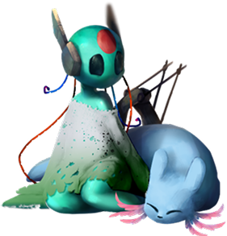

Проворная амфибия, способная делать быстрые подкаты и прыгать выше других. Используйте его скорость, чтобы избегать опасностей!
Ссылка на википедию


Большая часть локаций ныне затоплена и заражена что заставит вас изучать механики передвижения чтобы выжить. Сюжет протикает гораздо быстрее чем у других слизнекотов, но более насыщен диалогами и взаймодействием с персонажами.
Целью сюжетной компании ручья заключается в том чтобы добраться до пяти галек который в последнее время находится в плачевном состоянии и по его просьбе войти внутрь конструкции чтобы забрать ячейку разряжение из-за которой и идут дожди в мире. Доставив эту ячейку смотрящей на луну она попросит отнести ее в свою конструкцию, но предупреждает о сложностях что там будет. После прохождения компании Смотрящая налуну вспомнит о всех событиях что прозошли с ней и то что ее зовут старшая сестра луна. Так же в концовке показывают что пять галек получил от нее сообщение. В следющих сюжетных компаниях это отразится подробнее.
